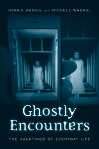

<body bgcolor="#FFFFFF" text="#000000" link="#0000FF" vlink="#CC0000" alink="#CC0000"><center><hr width="350" size="1" align="center" noshade><p>
<i>How people experience ghosts and hauntings, the ways they make sense of uncanny experiences, and the consequences thereof</i>
<br><hr width="350" size="1" align="center" noshade><p><a href="https://cdcshoppingcart.uchicago.edu/Cart/ChicagoBook.aspx?ISBN=&&PRESS=temple" target="_top">Buy this book!</a> | <a href="https://cdcshoppingcart.uchicago.edu/Cart/Cart.aspx?PRESS=temple" target="_top">View Cart</a> | <a href="https://cdcshoppingcart.uchicago.edu/Cart/Cart.aspx?PRESS=temple" target="_top">Check Out</a></p><p></p></center><!--none//--><h1>Ghostly Encounters</h1>
<H2>The Hauntings of Everyday Life</H2>
<h3>Dennis Waskul with Michele Waskul</h3>
paper: $25.95, Jun 16<BR>EAN:&nbsp;978-1-4399-1289-8<BR><font color=#990033>Not Yet Published Preorder</FONT><font size=-7><br>&nbsp;</font></p><p class="info">cloth: $59.50, <BR>EAN:&nbsp;978-1-4399-1288-1<BR><font color=#990033>Not Yet Published Preorder</FONT><font size=-7><br>&nbsp;</font></p><p class="info">e-book: $25.95, <BR>EAN:&nbsp;978-1-4399-1290-4<BR><font color=#990033>Not Yet Published Preorder</FONT><font size=-7><br>&nbsp;</font></p></p></td></tr></table>
<BR> <p class="info">164 pp<BR> 5.5 x 8.25<BR> 17&nbsp;color&nbsp;illustrations<BR></P> <p class="info"><font size=-7>&nbsp;</font></p><p class="info">
</P><BLOCKQUOTE></BLOCKQUOTE>
<p>
“<i>In the top corner of the window a pale, milky-white wisp is rising almost to the top of our ten-foot ceiling…. I am startled but not afraid…. Mostly, I am engrossed; I have never seen anything like this before (or since) and it fascinates me.”<br>
<p></i>Dennis Waskul writes these lines—about his first-hand experience with the supernatural—in the introduction to his beguiling book <i>Ghostly Encounters. </i>Based on two years of fieldwork and interviews with 71 midwestern Americans, the Waskuls’ book is a reflexive ethnography that examines how people experience ghosts and hauntings in everyday life. The authors explore how uncanny happenings become ghosts, and the reasons people struggle with or against a will to believe. They present the variety and character of hauntings and ghostly encounters, outcomes of people telling haunted legends, and the nested consequences of ghostly experiences.<i>
<br /></i><b>
<br /></b>Through these stories, <i>Ghostly Encounters</i> seeks to understand the persistence of uncanny experiences and beliefs in ghosts in an age of reason, science, education, and technology—as well as how those beliefs and experiences both reflect and serve important social and cultural functions.
<br />
<br>
<P CLASS="top"><A HREF="#top">BACK TO TOP</A></P>&nbsp;
<BR>&nbsp;
&nbsp;<P>
</P><BR>&nbsp;
<H2>About the Author(s)</H2><p>
<b>Dennis Waskul</b> is a Professor of Sociology and Distinguished Faculty Scholar at Minnesota State University Mankato, and has served as president of the Society for the Study of Symbolic Interaction. He has authored or co-authored several books including <i>Body/Embodiment: Symbolic Interaction and the Sociology of the Body</i> (with Phillip Vannini), <i>The Senses in Self, Culture, and Society</i> (with Phillip Vannini and Simon Gottschalk), and<i> Popular Culture as Everyday Life</i> (with Phillip Vannini).
<br>
<p>
<b>Michele Waskul</b> is an independent scholar with a focus on special education.
<br>
<P CLASS="top"><A HREF="#top">BACK TO TOP</A></P>
<p><h2>Subject Categories</h2><A HREF="/tempress/sociology.html" TARGET="_top">Sociology</a><BR><A HREF="/tempress/anthropology.html" TARGET="_top">Anthropology</a>
</p>
<P><I><a href="" onMouseOver="window.status='Click for other books in this series!'; return true;" onMouseOut="window.status="; return true;" target="_top”>
</p></p>
<p align="center"><a href="https://cdcshoppingcart.uchicago.edu/Cart/ChicagoBook.aspx?ISBN=&&PRESS=temple" target="_top">Buy this book!</a> | <a href="https://cdcshoppingcart.uchicago.edu/Cart/Cart.aspx?PRESS=temple" target="_top">View Cart</a> | <a href="https://cdcshoppingcart.uchicago.edu/Cart/Cart.aspx?PRESS=temple" target="_top">Check Out</a></p><p><font face="Arial" size="1"><a href="copyright.html" onMouseOver="window.status='Web Copyright Policy';return true;" onMouseOut="window.status=''" title="Web Copyright Policy">&copy;</a> <a href="http://www.temple.edu" target="new" onMouseOver="window.status='Link to Temple University home page';return true;" onMouseOut="window.status=''" title="Link to Temple University home page">Temple University</a>. All Rights Reserved. http://www.temple.edu/tempress/titles/2377_reg.html</font></p>